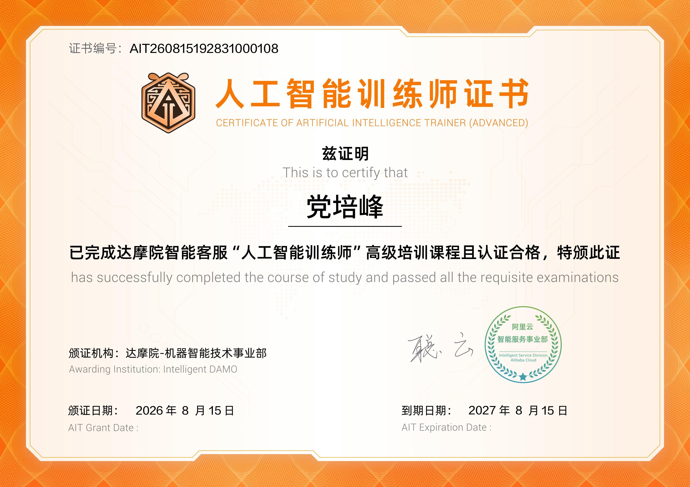
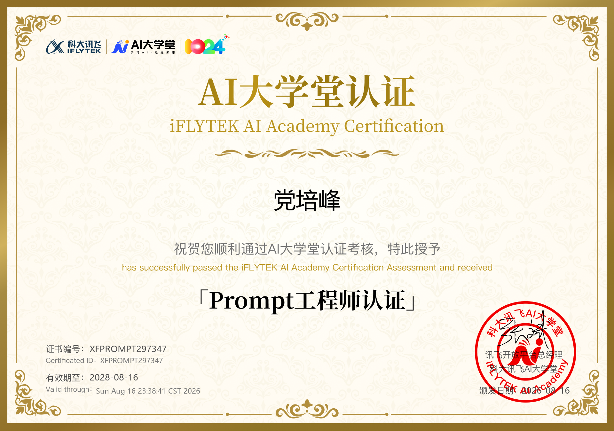
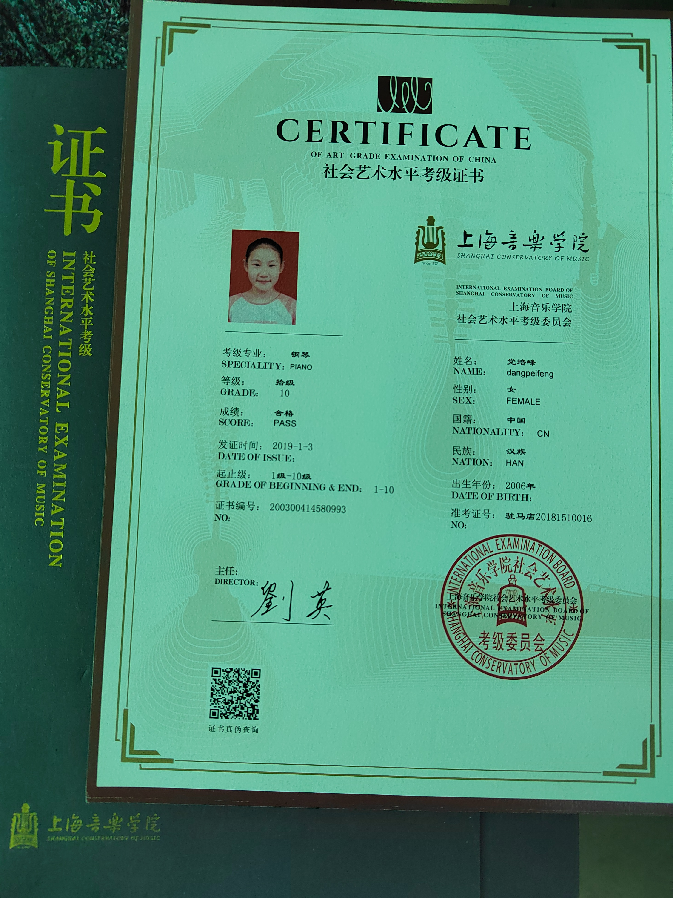
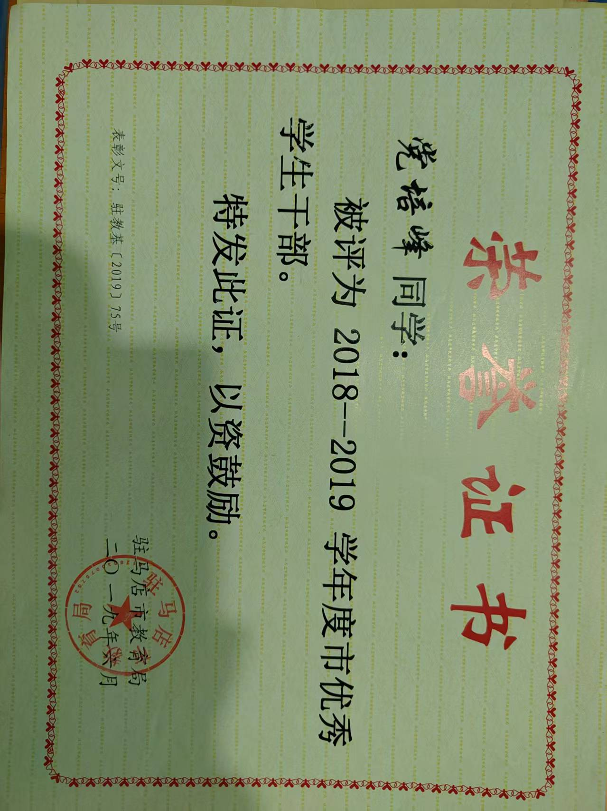
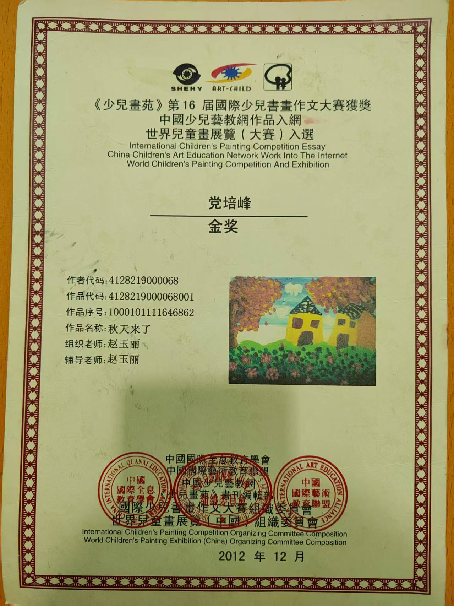
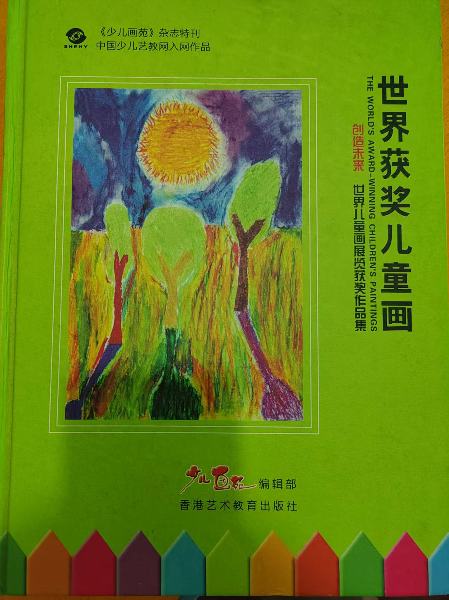

党培峰 He/Him
计算机科学与技术 / 智能机器人开发 / AIGC 全栈应用 / 跨界艺术
兼具计算机逻辑抽象力与跨界艺术审美感的复合型人才。专注 Python/C 算法基础与机器人避障规划；精通 Prompt 结构化工程与 AIGC 工具链搭建，实现高效数字化创作与自动化工作流范式；持有钢琴（上音）与舞蹈最高级（十级）认证及国美绘画一等奖，兼具极佳体能、抗压韧性与团队组织统筹才能。
党培峰 AI 交互代理 (Ask Peifeng AI)
上海音乐学院 钢琴十级 · 极客微型合成器
支持点击或键盘 [1-7] 弹奏。结合 Web Audio API 实时合成与 Canvas 频域波形渲染：
机器人避障算法实战 (+30% 精度优化)
交互指引：在下方画布上点击放置/清除障碍物 (红色)，机器人 (绿色) 将通过向量场算法实时重新计算最佳路线！
数字化创作与工作流综合提效
上音钢琴十级 + 舞蹈最高级
AIGC 数字化创作与轻量应用开发
应用目标：将 LLM 生成能力融入演示文稿排版、轻量游戏代码生成与音乐后制，打造极速高效的多模态创作链路。
机器人技术应用与创新大赛
应用目标：针对服务/工业场景，组建 5 人团队参加科创赛事，负责硬件驱动对接与实时避障算法调优。
专业技能与综合素养矩阵
跨领域的计算机编程、AIGC 生产力与艺术修养
爵士 Hip-hop 演艺项目与商业 MV 录制
应用目标：毕业假期进行高强度爵士/Hip-hop 舞蹈集训，两周内高效交付高质量 MV 录制与线下舞台演出。
高中班级管理委员会
教育背景
学业表现：高中阶段综合成绩名列前茅，多次获得校级优秀学生干部荣誉。
自主前置学习：自主通读 Python 编程基础与 C 语言核心逻辑，具备初步算法设计与调试思维。
获奖与专业等级证书
AI 证书展示台
阿里云 & AI 大学堂专项认证资质


才艺展示栏目
个人钢琴演奏 · 原创音乐 · Hiphop
比赛随拍

钢琴十级证书
舞蹈十级证书

市优秀干部

第十六届国际少儿书画大赛金奖

入选世界获奖儿童画